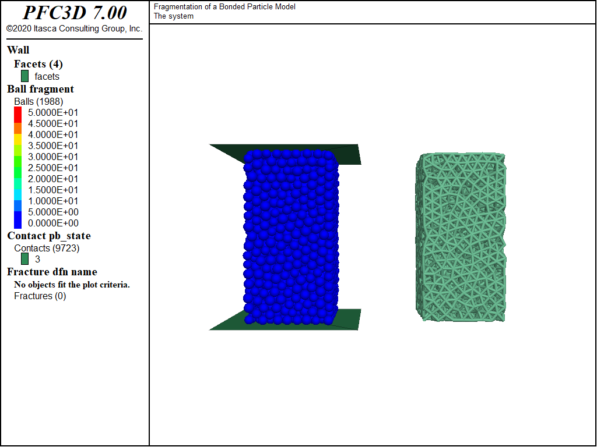
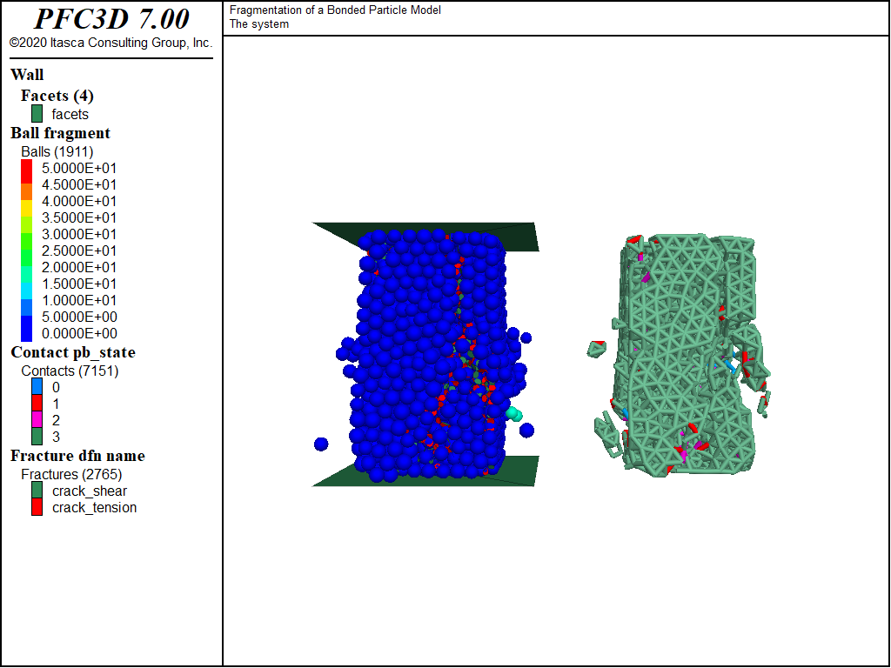
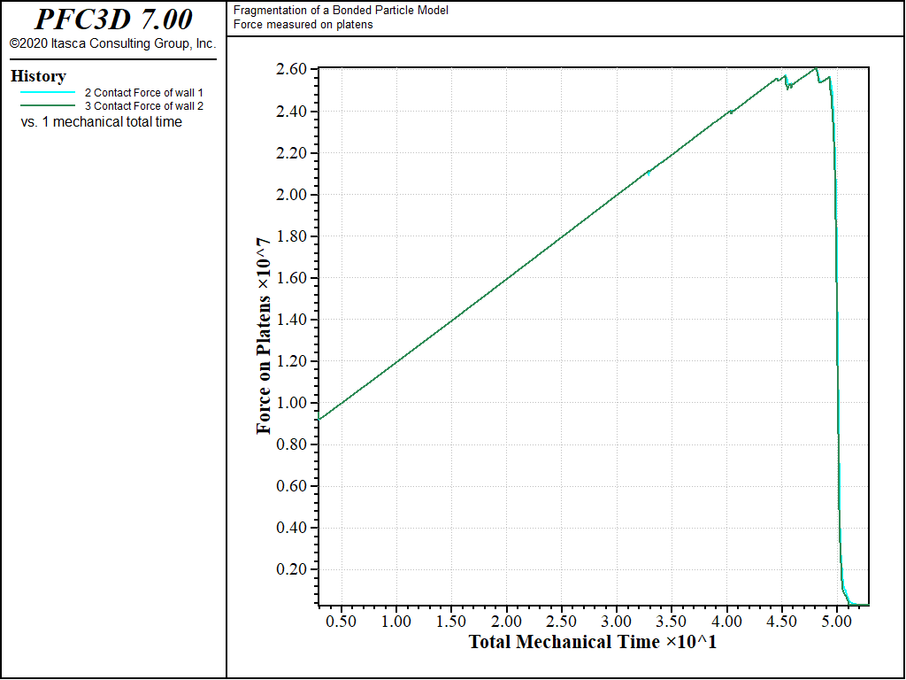
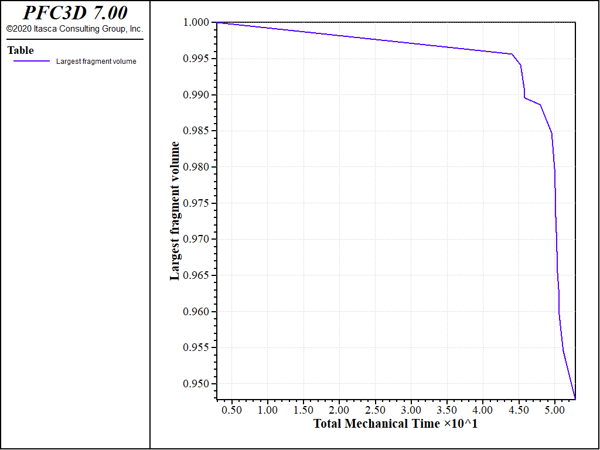

利用裂隙跟踪裂纹的单轴压缩破碎分析
问题描述
注意
本算例的项目文件可在 PFC 中查看或运行。[1]所用的数据文件（data files）列于本算例末尾。
先生成一个简单的黏结颗粒集合体，再在无侧限单轴压缩条件下加载至破坏。本算例旨在说明如何使用 PFC 内置工具跟踪破碎过程。有关黏结集合体的具体构建过程，请参阅“生成黏结颗粒集合体（Generating a Bonded Assembly）”教程及材料建模支持（material-modeling support）工具包。
PFC3D 模型
首先，采用与“生成黏结颗粒集合体（Generating a Bonded Assembly）”一节类似的方法生成 PFC3D 黏结颗粒集合体。压缩前的初始状态见图 1（Figure 1）。图中接触按属性 平行粘结状态（pb_state） 的数值着色，数值为 3 表示已安装平行黏结；为便于观察，对接触作了平移显示。


图 1：初始状态。接触按 平行粘结状态（pb_state） 着色，并作平移显示以便观察。
进行单轴压缩时，将集合体置于上下两块墙体压板之间，为压板指定沿 z 方向大小相等、方向相反的速度，并运行模型直至达到目标模型时间。通过两条历程监测试样施加在压板上的力的大小，用以衡量试样所承受的压应力。
采用不同设置重复进行三次压缩。
- CASE 0 为常规计算。
- 在 CASE 1 中启用破碎块体功能（fragment logic），并通过 设置球体结果输出（
ball results） 命令，在模拟过程中每隔 0.1 个时间单位保存部分状态信息。 - 在 CASE 2 中，除使用破碎块体功能（fragment logic）和 设置球体结果输出（
ball results） 命令外，还为线性平行黏结的 bond_break 回调事件注册一个 FISH 函数。该函数监测黏结断裂事件，并使用离散裂隙网络功能（Discrete Fracture Network logic）创建裂隙，以存储断裂的位置、尺寸和方位。此外，仅在发生黏结断裂事件时计算破碎块体，并且仅在系统中破碎块体数量发生变化时保存球颗粒结果状态。用于建立该裂纹跟踪环境的 FISH 函数实现在“fracture.fis”中。
模型结果
三种工况得到相同结果。CASE 2 的最终状态见图 2（Figure 2），为便于观察，接触和裂隙被平移至右侧显示。部分黏结接触发生拉伸破坏和剪切破坏，最终导致试样的宏观破坏。如图 3（Figure 3）所示，两块压板上的作用力大小相等，且反映出试样的脆性特征。


图 2：加载后的系统状态（CASE 3）。右侧为按破碎块体索引着色的球颗粒。左侧为按 平行粘结状态（pb_state） 着色的接触，以及按剪切／拉伸破坏模式着色的裂隙，均经过平移显示以便观察。


图 3：压板上测得的力的大小随时间变化的曲线。
启用破碎块体功能后，即可按球颗粒所属破碎块体的索引进行着色。该功能还提供其他实用工具，详细说明请参阅“破碎块体（Fragment）”一节。例如，图 4（Figure 4）给出了模拟过程中监测到的最大破碎块体体积相对于初始值的变化，初始状态下该块体即为整个集合体。


图 4：最大破碎块体体积相对于其初始值的变化。
对于 CASE 2 和 CASE 3，模拟过程中已间歇保存球颗粒构型和破碎块体索引，因此可使用 FISH 函数 生成影片工况 1（make_movie_case1）（对应 CASE 1）和 生成影片工况 2（make_movie_case2）（对应 CASE 2）创建动画。这展示了如何将破碎块体功能（fragment logic）与 设置球体结果输出（ball results） 命令结合，用于深入分析结果。不过，需要注意这两项功能的内存开销。CASE 1 和 CASE 2 的最终模型状态文件（SAV）均比 CASE 0 更大，其中 CASE 1 超过其 10 倍。采用 CASE 2 中的自定义函数来保存模型结果可以节省内存。也可将结果构型保存为二进制文件，而不是存储在 RAM 中，使模型内存占用保持在合理水平。
结束语
本算例说明了使用 PFC 对黏结颗粒模型开展单轴压缩试验的步骤，也说明了如何将破碎块体（Fragment）和离散裂隙网络（Discrete Fracture Network）功能与 设置球体结果输出（ball results） 命令相结合，在模拟过程中跟踪破碎过程，并间歇存储相关信息，以供后续处理使用。
fragment.dat
; 文件名：fragment.dat
;
; 说明 Fragment、DFN 和模型结果逻辑的用法
; 以研究黏结颗粒模型的破碎过程。
;
;=============================================================================
model new
model large-strain on
model precision 15
model title 'Fragmentation of a Bonded Particle Model'
;-----------------------------------------------------------------------------
; --------------- 初始阶段：创建黏结试样 ---------------
;-----------------------------------------------------------------------------
model domain extent -5 5 -5 5 -7.5 7.5 condition destroy
contact cmat default model linear property kn 1e7
contact cmat default type ball-ball model linearpbond ...
property kn 5e6 proximity 0.1
wall generate box -2.5 2.5 -2.5 2.5 -5 5
model random 10001
ball distribute porosity 0.3 radius 0.25 0.3 box -2.5 2.5 -2.5 2.5 -5 5
ball attribute density 1.0e3 damp 0.7
model cycle 2000 calm 10
model solve calm 1000 ratio-average 5e-3
contact method bond gap 0.1
contact property pb_kn 1e7 pb_ks 1e7 pb_ten 4e5 pb_coh 4e5 pb_fa 20.0
wall delete
contact cmat default type ball-facet model linear ...
property kn 1e7 ks 1e7 fric 0.5
wall generate id 1 name 'top' polygon -4.0 -4.0 5.0 ...
-4.0 4.0 5.0 ...
4.0 4.0 5.0 ...
4.0 -4.0 5.0
wall generate id 2 name 'bottom' polygon -4.0 -4.0 -5.0 ...
-4.0 4.0 -5.0 ...
4.0 4.0 -5.0 ...
4.0 -4.0 -5.0
wall attribute rotation-center 0.0 0.0 5.0 range position-z 5.0
wall attribute rotation-center 0.0 0.0 -5.0 range position-z -5.0
model clean
model cycle 10
model solve elastic ratio-average 5e-3
wall attribute velocity-z 0.0 gradient 0.0 0.0 -0.001
model history name '1' mechanical time-total
wall history name '2' force-contact id 1
wall history name '3' force-contact id 2
model save 'initial'
;-----------------------------------------------------------------------------
; ------------ 工况 0：不追踪碎片 - 无球结果 ------------
;-----------------------------------------------------------------------------
model solve time 50.0
model save 'final-case0'
;-----------------------------------------------------------------------------
; ------------ 工况 1：连续更新碎片并记录球结果 ------
;-----------------------------------------------------------------------------
model restore 'initial'
fragment register ball-ball
fragment activate time 0.1
model mechanical time-total 0.0
model result interval mechanical 0.1
ball result add-attribute fragment
wall result add-attribute velocity
model solve time 50.0
model save 'final-case1'
;program call post_treat.fis
;[make_movie_case1]
;-----------------------------------------------------------------------------
; ------------ 工况 2：自定义更新破碎块体与球结果 -----------
;-----------------------------------------------------------------------------
model restore 'initial'
program call 'fracture.fis'
[track_init]
model solve time 50.0
[track_end]
model save 'final-case2'
;program call post_treat.fis
;[make_movie_case2]
program return
;=============================================================================
; 文件结束：fragment.dat
fracture.fis
; 文件名：fracture.fis
;
; 用于追踪 BPM 中破碎过程的简单环境。
; 监测 LinearPBond 模型的 "bond_break" 事件并将其转化为裂隙。
; 使用破碎块体与球结果逻辑记录破碎块体 ID
;
;=============================================================================
fish define add_crack(entries)
local contact = entries(1)
local mode = entries(2)
local strength = entries(3)
local frac_pos = contact.pos(contact)
local norm = contact.normal(contact)
local dfn_label = 'crack'
local frac_dip
local frac_dipdir
local frac_size = contact.prop(contact,'pb_radius')
local len2 = math.sqrt(comp.x(norm)*comp.x(norm)+comp.y(norm)*comp.y(norm))
if len2 = 0
len2 = 1
endif
frac_dipdir = math.atan2(comp.x(norm)/len2,comp.y(norm)/len2) / math.degrad
local len3 = math.sqrt(len2*len2+comp.z(norm)*comp.z(norm))
if len3 = 0
len3 = 1
endif
frac_dip = math.atan2(len2/len3,comp.z(norm)/len3) / math.degrad
if frac_dip<0.0
frac_dip = -frac_dip
frac_dipdir = frac_dipdir + 180.0
endif
if frac_dip>90.0
frac_dip = 180.0-frac_dip
frac_dipdir = frac_dipdir + 180.0
endif
if frac_dipdir<0.0
frac_dipdir = frac_dipdir + 360.0
endif
if frac_dipdir > 360.0
frac_dipdir = frac_dipdir - 360.0
endif
if mode = 1 then
; 拉伸破坏
dfn_label = dfn_label + '_tension'
else if mode = 2 then
; 剪切破坏
dfn_label = dfn_label + '_shear'
endif
local arg = array.create(5)
arg(1) = 'disk'
arg(2) = frac_pos
arg(3) = frac_size
arg(4) = frac_dip
arg(5) = frac_dipdir
global dfn = dfn.find(dfn_label)
if dfn = null then
dfn = dfn.create(dfn_label)
endif
local fnew = fracture.create(dfn,arg)
fracture.prop(fnew,'failure_strength') = strength
fracture.prop(fnew,'age') = mech.time.total
crack_added = true
end
fish define track_fname
track_fcount += 1
track_fname = string.build('frag%1.p3result',track_fcount)
end
fish define track_init
command
fracture delete
model result clear-map
fragment clear
fragment register ball-ball
ball result add-attribute fragment
wall result add-attribute velocity
endcommand
; 激活 fishcalls
command
fish callback remove add_crack event bond_break
fish callback add add_crack event bond_break
fish callback remove monitor 100.0
fish callback add monitor 100.0
endcommand
; 重置全局变量
global crack_added = false
global track_fcount = 0
command
fragment compute
model result export [track_fname]
endcommand
global track_map = map(mech.time.total,fragment.num(1))
end
fish define monitor
if crack_added = true then
local numfrag = fragment.num()
command
fragment compute
endcommand
if fragment.num() # numfrag then
command
model result export [track_fname]
endcommand
map.add(track_map,mech.time.total,numfrag)
endif
endif
crack_added = false
end
fish define make_table
local frag1 = fragment.find(1)
local tab = table.create('volfrag1')
loop foreach local value map.keys(track_map)
table(tab,value) = ...
fragment.vol(frag1,fragment.catalog.num(value)) / fragment.vol(frag1,1)
endloop
end
fish define track_end
local numfrag = fragment.num()
command
fragment compute
endcommand
if fragment.num() # numfrag then
command
model result export [track_fname]
endcommand
map.add(track_map,mech.time.total,numfrag)
endif
make_table
end
;=============================================================================
; 文件结束：fracture.p3fis
post_treat.fis
fish define make_movie_case1
command
set echo off
ball result map [track_map]
endcommand
local count = 1
loop foreach local value track_map
global fname = string.build('fragments_case1_%1.png',count)
command
domain extent -10 10
ball result load [count] nothrow on
wall result load [count] nothrow on
plot current view 'the system'
plot bitmap filename [fname]
endcommand
count += 1
endloop
command
set echo on
endcommand
end
fish define make_movie_case2
local keys = map.keys(track_map)
local count = 1
command
set echo off
endcommand
loop foreach value keys
local fname = string.build('fragments_case2_%1.png',count)
command
domain extent -10 10
ball result load [count] nothrow on
wall result load [count] nothrow on
plot current view 'Fragments and Cracks'
plot mod 4 dfn colorby numericproperty "age" coloropt scaled ...
ramp max [value] above none map translate 10 0 0
plot mod 5 table xaxis max [value]
plot bitmap filename [fname]
endcommand
count += 1
endloop
command
set echo on
endcommand
end
尾注
| [1] | 要在 PFC 中查看本项目，请使用程序菜单。
⮡ PFC |
| 这些内容对您有帮助吗？… | FLAC3D © 2019, Itasca | 原文更新于 2020 年 10 月 8 日 |